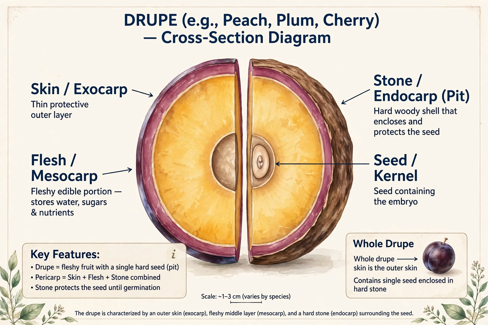

A drupe (or stone fruit) is a type of fruit in which an outer fleshy part surrounds a single hardened shell — the pit or stone — containing the seed. In botanical terms the skin is the exocarp, the flesh the mesocarp, and the stony layer the endocarp.
Typical drupes include members of the genus Prunus such as cherries, plums, peaches, and almonds (whose seed is eaten), as well as olives, mangoes, and coffee cherries.
Raspberries and blackberries are aggregates of small drupelets. The coconut is a fibrous drupe whose mesocarp is husk fibre rather than flesh. Walnuts are sometimes classed as drupe-like nuts.
Freestone fruit separates easily from the pit, while clingstone flesh adheres to it — a distinction important for canning peaches. Many drupes belong to the family Rosaceae.